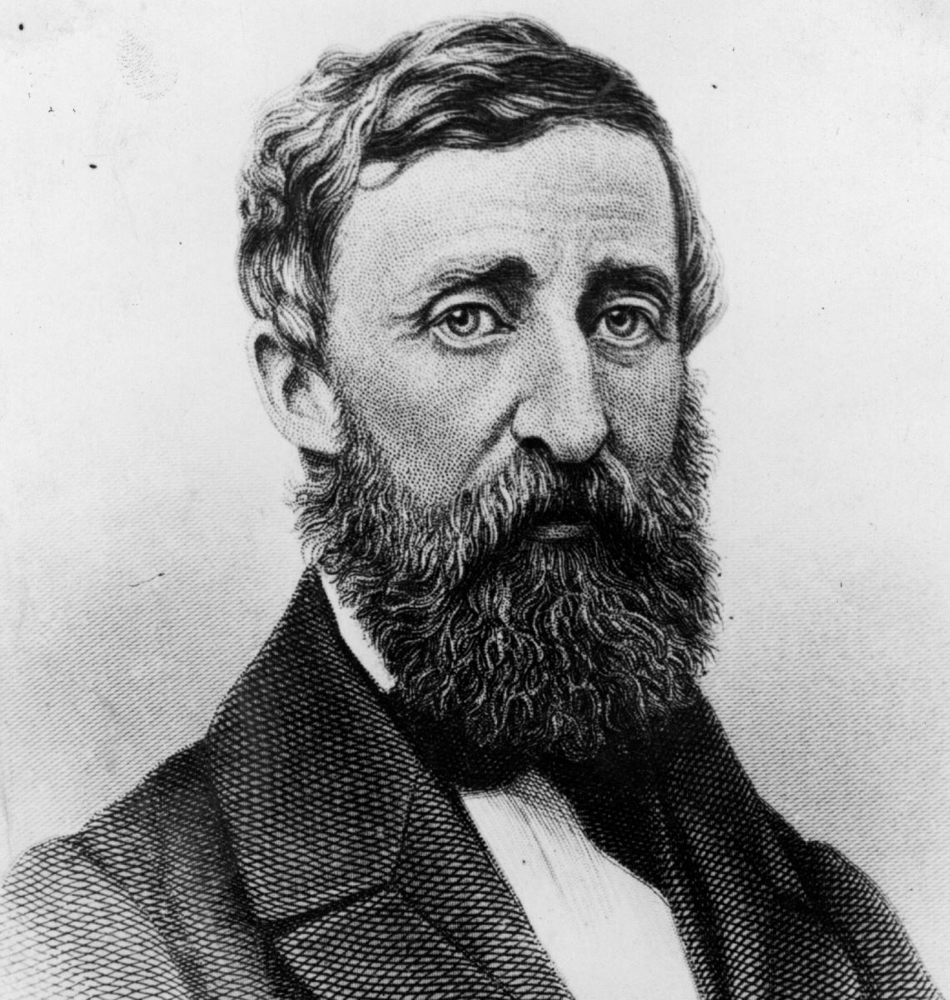
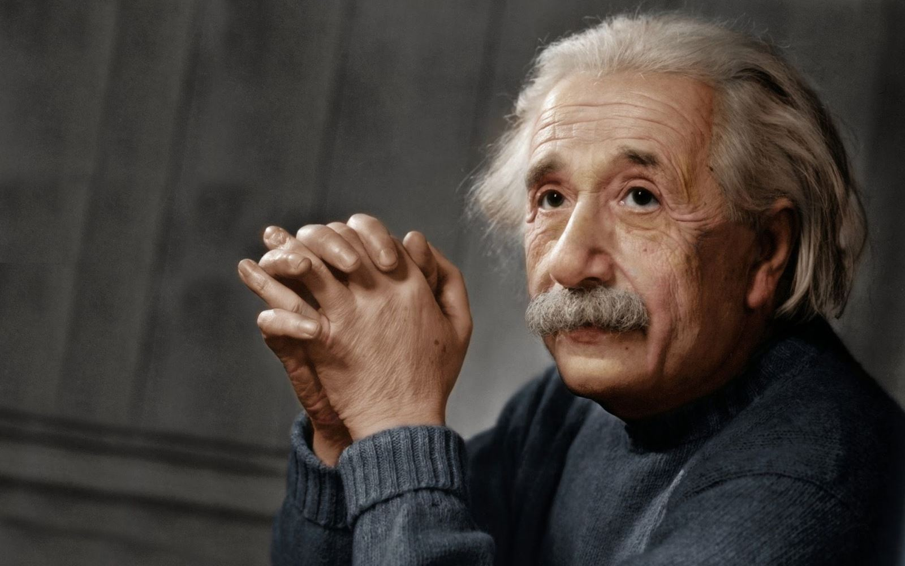

Cô Đơn Một Nghệ Thuật Bị Đánh Mất
“Tôi chưa bao giờ tìm được
người đồng hành để kết bạn như
nỗi cô đơn. Chúng ta thường
cô đơn khi ở giữa mọi người hơn
là khi ở trong phòng mình.”
- Henry David Thoreau

.* Henry David Thoreau, tên khai sinh là David Henry Thoreau (1817-1862), là nhà văn, nhà thơ, nhà tự nhiên học, sử học, triết học, nhà địa hình học người Mỹ. Ông là một trong những người đi tiên phong theo thuyết Tiên nghiệm và là một nhà hoạt động tích cực tham gia phong trào kháng thuế, bãi nô; ngoài ra ông còn để lại dấu ấn khi chỉ trích mạnh mẽ sự phát triển của công nghệ. Ông được nhiều người biết đến qua tác phẩm nổi tiếng Walden, trong đó ông đề cập đến việc bản thân đã từng sống một cuộc sống đơn giản và gần gũi với thiên nhiên (Nxb).
Bạn không cần trở thành một thầy tu mới tìm thấy sự cô đơn, bạn cũng không cần trở thành một ẩn sỉ mời tận hưởng được nó.
Cô đơn là một nghệ thuật đã bị đánh mất trong giai đoạn “siêu kết nối” như hiện nay. Và dù không phải là than vãn về vẻ đẹp của cộng đồng “kết nối toàn cầu” này, chúng ta thường xuyên có nhu cầu được ở một mình.
Ngồi trước biển, tĩnh lặng ngắm cảnh; đi bộ, lặng lẽ với những suy nghĩ của mình; ngắt mọi liên hệ với bên ngoài và chỉ viết; tìm lấy sự tĩnh lặng với một cuốn tiểu thuyết hay; tắm một mình...
Không có gì sai khi bạn thích có những lúc làm như thế. Thích được ở cạnh những người mình yêu thương, đi dạo với bạn bè hoặc ngắm mặt trời lặn bên bạn đời, đọc một cuốn sách cùng con cái. Đây đều là những điều đơn giản tuyệt đối trong cuộc sống này.
Nhưng một mình/cô đơn, ngày nay càng quan trọng hơn bao giờ hết, cũng là điều tuyệt đối cần thiết.
Lợi ích của “cô đơn”
Tác phẩm nghệ thuật đẹp nhất được tạo ra trong cô đơn, vì lý do thú vị này: chỉ khi một mình, chúng ta mới có thể chạm vào bản ngã và tìm thấy điều sâu thẳm nhất của sự thật, vẻ đẹp, tâm hồn. Một số nhà triết học nổi tiếng nhất thường đi bộ hàng ngày, và trong một buổi đi bộ họ tìm ra những triết lý sâu xa nhất.
Bài viết hay nhất, và thực tế là bất cứ điều gì tốt nhất mà con người làm được, thường được tạo ra trong cô đơn.
Đây là vài lợi ích bạn sẽ tìm thấy từ sự cô đơn:
* Có thời gian để suy nghĩ.
* Ở một mình, chúng ta có thể hiểu rõ bản thân hơn.
* Đối mặt trực diện với phần “xấu” trong con người chúng ta, và khắc phục nó.
* Có không gian để sáng tạo.
* Có không gian để né tranh mọi xáo trộn và tìm thấy sự bình yên.
* Có thời gian để suy nghĩ về những gì chúng ta đã làm, và rút ra bài học từ đó.
* Tách khỏi ảnh hưởng của người khác giúp ta tìm thấy tiếng nói của chính mình.
* Yên tĩnh giúp ta thưởng thức được những điều tưởng chừng nhỏ nhặt mà chúng ta đã đánh mất trong những lúc ồn ào.
Còn rất nhiều lợi ích khác nữa, nhưng chừng đó đã đủ để bạn bắt đầu. Lợi ích thật sự của một mình không thể diễn tả qua lời nói, mà phải được tìm thấy trong hành động.
Cách tìm thấy “cô đơn”
Bạn hãy khởi đầu bằng việc ngắt kết nối.
Tập hợp mọi phương tiện dùng để kết nối với người khác lại, và ngắt hết đi. Ngắt kết nối từ email, Facebook, Twitter, MySpace, các diễn đàn và mạng xã hội, tin nhắn Yahoo và Skype, website và blog. Tất cả các thiết bị di động và điện thoại di động của bạn.
Tắt máy tính... trừ khi bạn định sử dụng máy tính cho công việc sáng tạo. Trong trường hợp đó, hãy ngắt kết nối Internet, đóng các trình duyệt, tắt các chương trình được sử dụng để gắn kết với người khác.
Bước tiếp theo phụ thuộc vào việc bạn sử dụng chiến lược nào trong hai chiến lược dưới đây:
1. Ẩn mình đi. Điều này có thể thực hiện được trong văn phòng của bạn, bằng cách đóng cửa và/hoặc sử dụng tai nghe, nghe các bài hát êm dịu. Nếu có thể, hãy để đồng nghiệp biết bạn không muốn bị quấy rầy suốt một thời gian cố định nào đó trong ngày. Hoặc có thể thực hiện ở nhà, bằng cách tìm một không gian yên tĩnh, đóng cửa lại nếu được, hay sử dụng tai nghe. Quan trọng là tìm một cách để đóng cánh cửa nối với thế giới bên ngoài, bao gồm những đồng nghiệp của bạn và những người bạn sống cùng.
2. Ra ngoài. Đây là một cách hay để được một mình. Bước ra khỏi cửa và tận hưởng thế giới bên ngoài. Đi bộ, tìm một công viên hoặc một bãi biển, một ngọn núi, một quán cà phê yên tĩnh, tìm một bóng mát để nghỉ ngơi. Ngắm con người, hoặc ngắm thiên nhiên.
Vài mẹo hay khác:
* Thỉnh thoảng thử tắm trong yên tĩnh, thư giãn.
* Cuộn người lại thưởng thức một cuốn tiểu thuyết hay.
* Nếu bạn đã kết hôn và có con, hãy xin bạn đời cho bạn một ít thời gian được ở một mình, nhớ sau đó quay lại với sự thân thiện. Thực hiện điều đó như một “trao đổi” thường xuyên.
* Đi bộ mỗi ngày.
* Bắt đầu làm việc sớm, và làm việc trong yên lặng.
* Dùng một tách trà ngon.
* Thử một khoảng thời gian đều đặn mỗi ngày ngắt kết nối với bên ngoài.
* Không có thời gian một mình? Thế thì hãy thử cố gắng ngồi yên, tập trung vào hơi thở của bạn khi hít vào thở ra. Khi tâm trí bạn lang thang với những suy nghĩ về quá khứ và tương lai, kiên nhẫn nhắc mình lưu ý về những điều đó, sau đấy nhẹ nhàng quay trở lại theo dõi hơi thở.
 .
.
Chú thích:
* Albert Einstein (1879-1955) là nhà vật lý lý thuyết người Mỹ gốc Đức – Do Thái. Ông được xem là một trong những nhà khoa học có ảnh hưởng nhất của mọi thời đại, cha đẻ của vật lý hiện đại, nhà khoa học vĩ đại nhất của thế kỷ XX và là một trí thức lỗi lạc nhất trong lịch sử. Ông nhận giải Nobel về vật lý năm 1921 “vì những đóng góp cho vật lý lý thuyết, và đặc biệt cho sự khám phá của ông về định luật quang điện”. Ông được tập chí Times phong là “Người đàn ông của thế kỷ”. (Nxb)

.